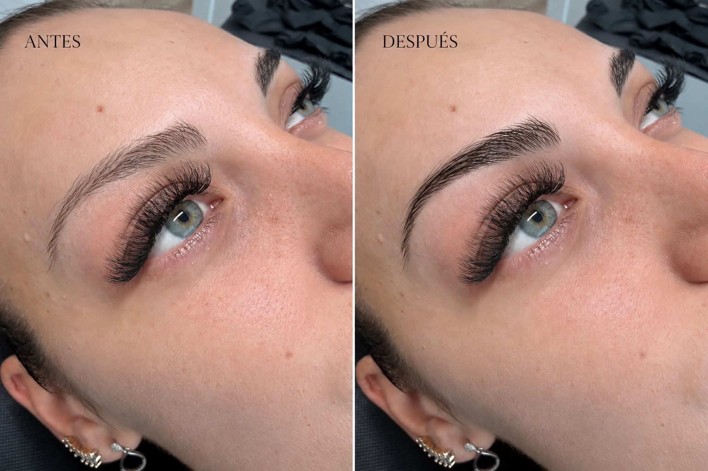

Diseño y color · Granollers
Tinte híbrido de cejas en Granollers
Diseñamos la forma y elegimos un tono que se integre con tu pelo, piel y facciones. El objetivo es aportar definición temporal sin endurecer la expresión ni oscurecer la ceja más de lo necesario.

Diseño y tinte de cejas sin perder naturalidad
Antes de aplicar color estudiamos la forma, densidad, subtono, pequeños huecos y la intensidad que buscas. El tono se elige para integrarse con tu base natural, no para aplicar el mismo marrón a todas las cejas.
Es una opción para cejas claras, pelo con diferencias de tono o personas que quieren visualizar una forma más definida antes de valorar otros tratamientos.
Qué incluye la cita
Elige según tu objetivo
Tinte, laminado o micropigmentación
El tinte de cejas aporta color temporal. El laminado orienta el pelo existente. La micropigmentación deposita pigmento para definir visualmente la ceja durante más tiempo.
Si quieres diseño, dirección y coloración en una sola experiencia, podemos valorar Nohuska Natural Brow™. Si existen zonas sin pelo o buscas mayor duración, compararemos las opciones de micropigmentación.
¿Qué te gustaría mejorar?
Cuéntanos si buscas más color, una forma más limpia, orientar el pelo o completar visualmente zonas con menor densidad. Te indicaremos qué opciones merece la pena comparar.
Consultar qué me convieneCaso real · Nohuska
Diseño y definición adaptados al pelo y a la expresión natural.La combinación exacta de técnicas se decide en cada valoración
Servicio local
Tinte de cejas cerca de ti en Granollers
Realizamos el servicio con cita previa en Nohuska Beauty Lab, Avinguda Sant Esteve, 40, 08402 Granollers. Atendemos también a clientas de Canovelles, Les Franqueses, La Roca, Cardedeu, La Garriga, Mollet y otras localidades del Vallès Oriental.
Puedes enviar una fotografía actual sin filtro y con luz natural para recibir una primera orientación antes de desplazarte.
Valoración gratuita
Revisamos forma, pelo, piel y tono antes de recomendar el diseño y la coloración. Te explicaremos el servicio antes de que decidas reservar.
Solicitar valoraciónPreguntas sobre tinte híbrido de cejas
¿Qué es el tinte híbrido de cejas?
Es una coloración temporal que aporta definición al pelo y, según la técnica y la piel, puede dejar un efecto suave sobre la forma diseñada.
¿Qué diferencia hay entre tinte, laminado y micropigmentación?
El tinte aporta color temporal; el laminado orienta el pelo existente; la micropigmentación deposita pigmento para definir visualmente la ceja durante más tiempo.
¿Se puede combinar con diseño o laminado?
Sí. Podemos combinar diseño y tinte o integrarlo en Nohuska Natural Brow con laminado cuando la valoración lo aconseja.
¿Cuánto dura el tinte de cejas?
La duración visible varía según la piel, el pelo, la rutina, la limpieza y los cuidados. Te orientaremos según tu caso.
¿Dónde se realiza?
En Nohuska Beauty Lab, Avinguda Sant Esteve, 40, 08402 Granollers, con cita previa.
¿La valoración es gratuita?
Sí. Revisamos forma, pelo, piel y tono antes de recomendar el diseño y la coloración.
Más tratamientos de cejas
Define tus cejas sin perder naturalidad
Diseño y valoración personalizada en Granollers.